存储器概述
分类
按在计算机中的作用(层次)分类
-
主存储器
简称主存，也称内存储器（内存），用来存放计算机运行期间所需的程序和数据，CPU 可以直接随机地对其进行访问，也可以和高速缓冲存储器（Cache）及辅助存储器交换数据。
特点是容量较小、存取速度较快、每位的价格较高。
-
辅助存储器
简称辅存，也称外存储器或外存，用来存放当前暂时不用的程序和数据，以及一些需要永久性保存的信息。辅存的内容需要调入主存后才能被 CPU 访问。
特点是容量大、存取速度较慢、单位成本低。
-
高速缓冲存储器
简称 Cache，位于主存和 CPU 之间，用来存放当前 CPU 经常使用的指令和数据，以便 CPU 能高速地访问它们。Cache 的存取速度可与 CPU 的速度相匹配，但存储容量小、价格高。现代计算机通常将它们制作在 CPU 中。
按存储介质分类
按存储介质，存储器可分为
- 磁表面存储器（磁盘、磁带）；
- 磁芯存储器；
- 半导体存储器（MOS 型存储器、双极型存储器）；
- 光存储器（光盘）；
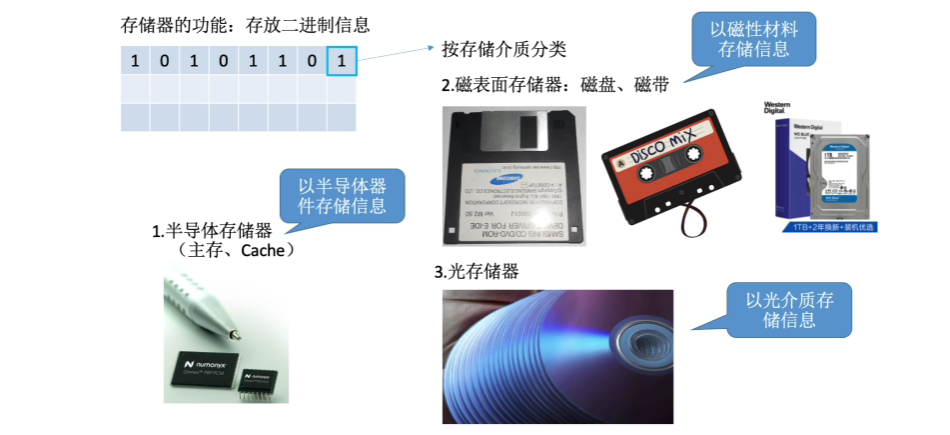
按存取方式分类
-
随机存储器(RAM)
存储器的任何一个存储单元都可以随机存取，而且存取时间与存储单元的物理位置无关。
其优点是读/写方便、使用灵活，主要用作主存或高速缓冲存储器。
RAM 又分为静态 RAM 和动态 RAM。
-
只读存储器(ROM)
存储器的内容只能随机读出而不能写入。信息一旦写入存储器就固定不变，即使断电，内容也不会丢失。
因此，通常用它存放固定不变的程序、常数和汉字字库等。它与随机存储器可共同作为主存的一部分，统一构成主存的地址域。
由 ROM 派生出的存储器也包含可反复重写的类型，ROM 和 RAM 的存取方式均为随机存取。
广义上的只读存储器已可通过电擦除等方式进行写入，其“只读”的概念没有保留，但仍保留了断电内容保留、随机读取特性，但其写入速度比读取速度慢得多。
-
串行访问存储器
对存储单元进行读/写操作时，需按其物理位置的先后顺序寻址，包括顺序存取存储器（如磁带）和直接存取存储器（如磁盘、光盘）。
- 顺序存取存储器的内容只能按某种顺序存取，存取时间的长短与信息在存储体上的物理位置有关，其特点是存取速度慢。
- 直接存取存储器既不像 RAM 那样随机地访问任何一个存储单元，又不像顺序存取存储器那样完全按顺序存取，而是介于两者之间。存取信息时通常先寻找整个存储器中的某个小区域（如磁盘上的磁道)，再在小区域内顺序查找。
Note
相联存储器是按内容或地址进行寻址的，价格较为昂贵。一般用来制作 TLB(快表)、相联 Cache 等。
相联存储器的基本原理是把存储单元所存内容的某一部分作为检索项（即关键字项）去检索该存储器，并将存储器中与该检索项符合的存储单元内容进行读出或写入。
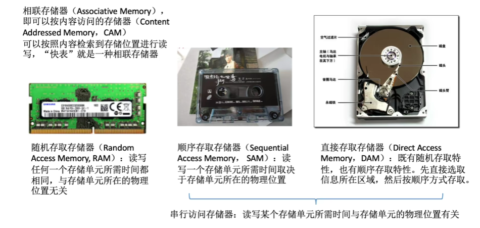
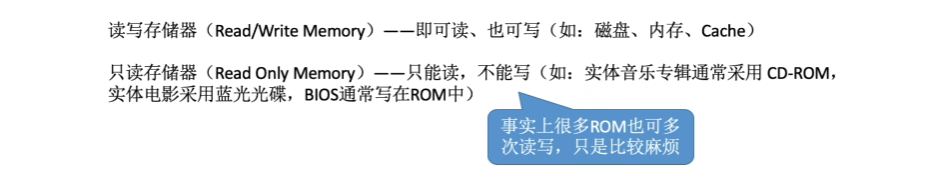
按信息的可保存性分类
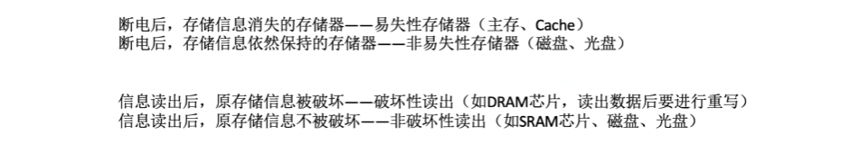
具有破坏性读出性能的存储器，每次读出操作后，必须紧接一个再生的操作，以便恢复被破坏的信息。
性能指标
存储器有三个主要性能指标，即存储容量、单位成本和存储速度。这三个指标相互制约，设计存储器系统所追求的目标就是大容量、低成本和高速度。
存储字数表示存储器的地址空间大小，字长表示一次存取操作的数据量。
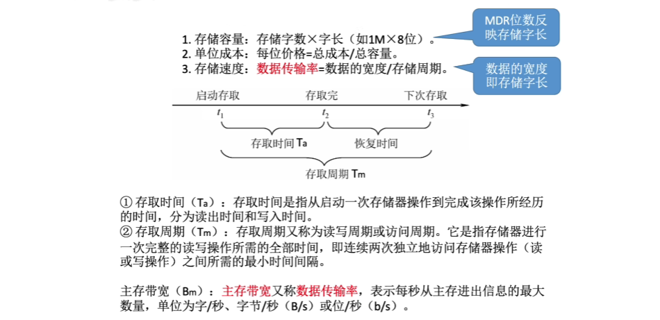
存取时间不等于存取周期，通常存取周期大于存取时间。
这是因为对任何一种存储器，在读/写操作之后，总要有一段恢复内部状态的复原时间。对于破坏性读出的存储器，存取周期往往比存取时间大得多，因为存储器中的信息读出后需要马上进行再生。
多层次存储系统
为了解决存储系统大容量、高速度和低成本这三个相互制约的矛盾，在计算机系统中，通常采用多级存储器结构。
存储器层次结构的主要思想是上一层的存储器作为低一层存储器的高速缓存。当 CPU 要从存储器中存取数据时，先访问 Cache，若不在 Cache 中，则访问主存，若不在主存中，则访问磁盘，此时，操作数从磁盘读出送到主存，然后从主存送到 Cache。
- Cache—主存层：主要解决 CPU 和主存速度不匹配的问题，主存和 Cache 之间的数据调动是由硬件自动完成的，对所有程序员均是透明的。
- 主存—辅存层：主要解决存储系统的容量问题，主存和辅存之间的数据调动是由硬件和操作系统共同完成的，对应用程序员是透明的。
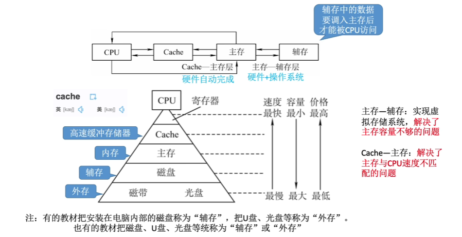
Tip
在 Cache—主存层和主存—辅存层中，上一层中的内容都只是下一层中的内容的副本，也即 Cache（或主存）中的内容只是主存（或辅存）中的内容的一部分。
主存储器
存储器芯片内部结构
-
存储体（存储矩阵）
存储单元的集合，它由行选择线和列选择线来选择所访问单元，存储体的相同行、列上的多位（位平面数）同时被读出或写入。
-
地址译码器
将地址转换为译码输出线上的高电平，以便驱动相应的读/写电路。地址译码有单译码法（一维译码）和双译码法（二维译码）两种方式。
- 单译码法：只有一个行译码器，同一行中所有存储单元的字线连在一起，同一行中的各单元构成一个字，被同时读出或写入。缺点是地址译码器的输出线数过多。
- 双译码法：地址译码器分为 X 和 Y 方向两个译码器，在选中的行和列交叉点上能确定一个存储单元，这是 DRAM 芯片目前普遍采用的译码结构。
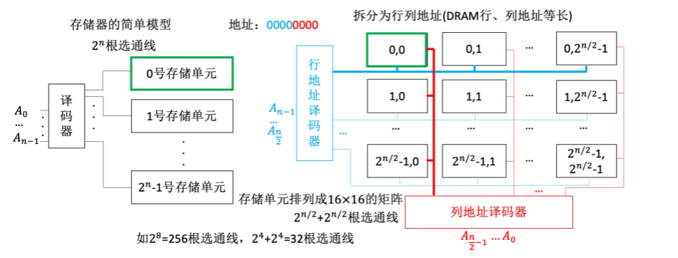
-
I/O 控制电路
控制被选中的单元的读出或写入，具有放大信息的作用。
-
片选控制信号
单个芯片容量太小，往往满足不了计算机对存储器容量的要求，因此需用一定数量的芯片进行存储器的扩展。在访问某个字时，必须“选中”该存储字所在的芯片，而其他芯片不被“选中”，因此需要有片选控制信号。
-
读/写控制信号
根据 CPU 给出的读命令或写命令，控制被选中单元进行读或写。
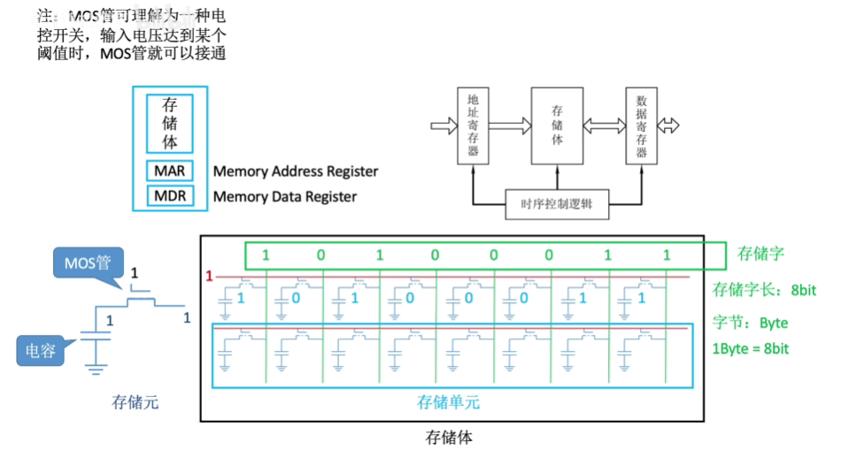
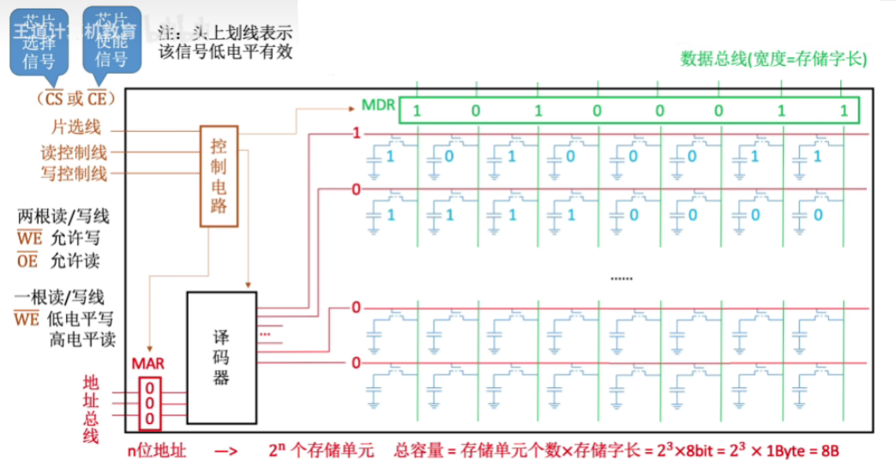
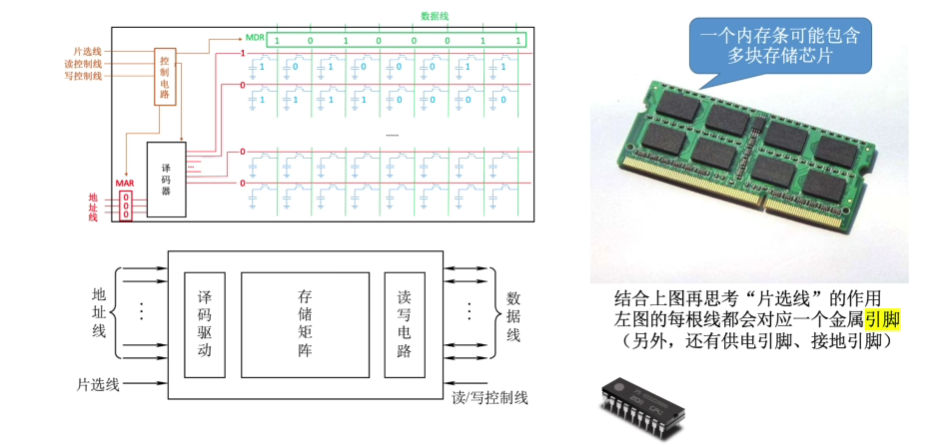
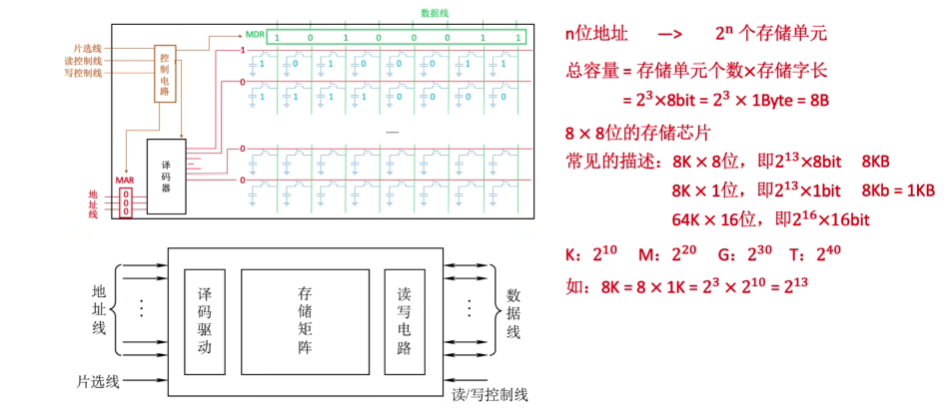
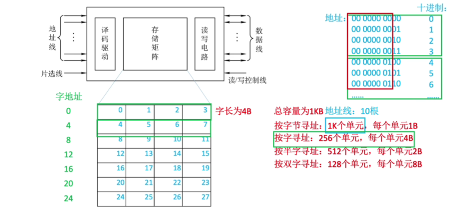
随机存储器(RAM)
RAM 分为 静态随机存储器(Static Random Access Memory, SRAM)和动态随机存储器(Dynamic Random Access Memory, DRAM)。
主存储器主要由 DRAM 实现，靠近处理器的那一层(Cache)则由 SRAM 实现，它们都是易失性存储器。
SRAM 工作原理
通常把存放一个二进制位的物理器件称为存储元，它是存储器的最基本的构件。地址码相同的多个存储元构成一个存储单元。若干存储单元的集合构成存储体。
静态随机存储器的存储元是用双稳态触发器（六晶体管 MOS）来记忆信息的，静态是指即使信息被读出后，它仍保持其原状态而不需要再生（非破坏性读出）。
SRAM 的 存取速度快，但集成度低，功耗较大，价格昂贵，一般用于高速缓冲存储器。
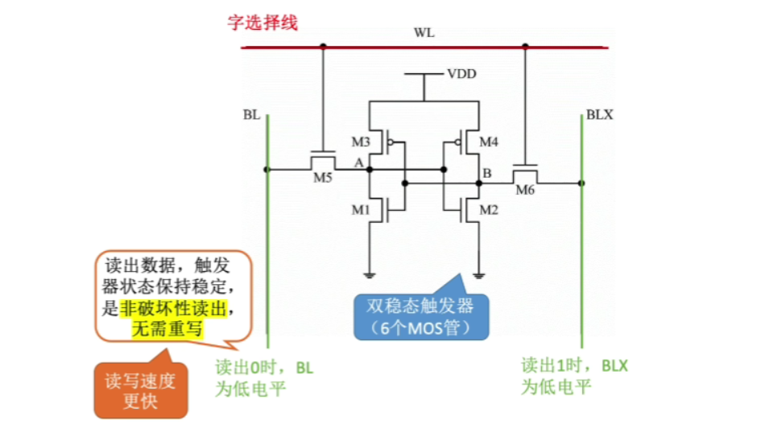
DRAM 工作原理
与 SRAM 的存储原理不同，动态随机存储器是利用存储元电路中栅极电容上的电荷来存储信息的，DRAM 的基本存储元通常只使用一个晶体管，所以它比 SRAM 的密度要高很多。
相对于 SRAM 来说，DRAM 具有集成度高、位价低和功耗低等优点，但 DRAM 的存取速度比 SRAM 慢，且必须定时刷新和读后再生，一般用于大容量的主存系统。
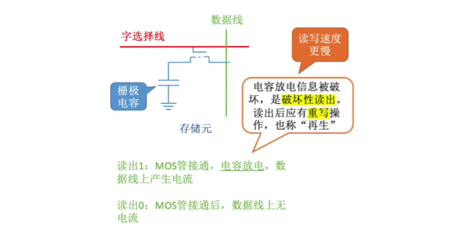
DRAM 刷新
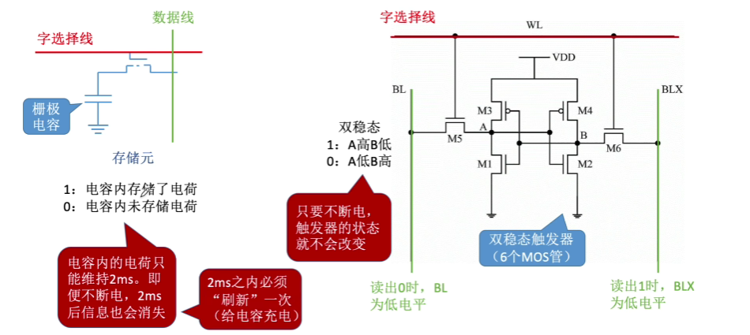
DRAM 电容上的电荷一般只能维持 1 ～ 2ms，因此即使电源不断电，信息也会自动消失。此外，读操作会使其状态发生改变（破坏性读出），需读后再生，这也是称其为动态存储器的原因。刷新可以采用读出的方法进行，根据读出内容对相应单元进行重写，即读后再生。对同一行进行相邻两次刷新的时间间隔称为刷新周期，通常取 2ms。
刷新简单来说就是重新给 DRAM 的电容充电。
常用的刷新方式有以下 3 种：
-
分散刷新
将一个存储器系统的工作周期分为两部分：前半部分用于正常的读/写操作；后半部分用于刷新。
这种刷新方式增加了系统的存取周期，如存储芯片的存取周期为 0.5us，则系统的存取周期为 1us。
优点是没有死区；缺点是加长了系统的存取周期。
-
集中刷新
在一个刷新周期内，利用一段固定的时间，依次对存储器的所有行进行逐一再生，在此期间停止对存储器的读/写操作，称为死时间，也称访存死区。
优点是读/写操作时不受刷新工作的影响；缺点是在集中刷新期间（死区）不能访问存储器。
-
异步刷新
结合了前两种方法，使得在一个刷新周期内每一行仅刷新一次。
具体做法是将刷新周期除以行数，得到相邻两行之间刷新的时间间隔 t，每隔时间 t 产生一次刷新请求。这样就使“死时间”的分布更加分散，避免让 CPU 连续等待过长的时间。
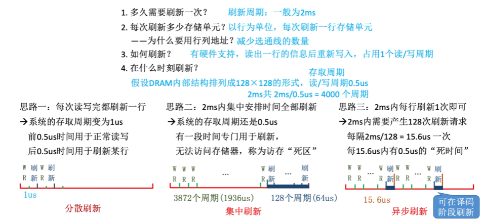
DRAM 的刷新需要注意以下问题：
- 刷新对 CPU 是透明的，即刷新不依赖于外部的访问；
- DRAM 的刷新单位是行，由芯片内部自行生成行地址；
- 刷新操作类似于读操作，但又有所不同；
- 刷新时不需要选片，即整个存储器中的所有芯片同时被刷新；
Tip
虽然 DRAM 的刷新和再生都是恢复数据，但刷新与再生的过程并不完全相同。刷新是以行为单位，逐行恢复数据的，而再生仅需恢复被读出的那些单元的数据。
DRAM 芯片地址引脚复用
DRAM 芯片容量较大，地址位数较多，为了减少芯片的地址引脚数，通常采用地址引脚复用技术，行地址和列地址通过相同的引脚分先后两次输入，这样地址引脚数可减少一半。
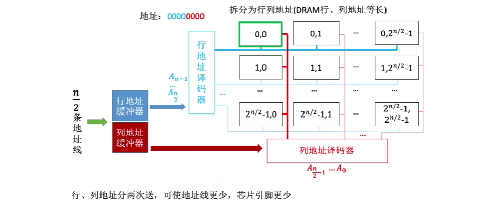
DRAM 行列数优化原则
假定有一个 位 DRAM 芯片的存储阵列，其行数为 r，列数为 c，则 。存储阵列的地址位数为 n，其中行地址位数为 ，列地址位数为 ，则 。
由于 DRAM 芯片采用地址引脚复用技术，为减少地址引脚数，应尽量使行、列位数相同，即满足 最小。又由于 DRAM 按行刷新，为减少刷新开销，应使行数较少，因此还需满足 。
DRAM 芯片读写周期
DRAM 芯片读/写周期的时序图如下图所示。为了使芯片能正确接收行、列地址并实现读/写操作，各信号的时间关系应符合一定要求。读（写）周期时间 tRC（tWC）表示 DRAM 芯片进行两次连续读（写）操作时所必须间隔的时间。
在读周期中，在 有效前将行地址送到芯片的地址引脚， 滞后 一段时间，在 有效前再将列地址送到芯片的地址引脚，、 应分别至少保持 tRAS 和 tCAS 的时间。在读周期中 为高电平，并在 有效前建立。
在写周期中，行列选通信号的时序关系和读周期相同。在写周期中 为低电平，同样在 有效前建立。为了保证数据可靠地写入，写数据必须在 有效前在数据总线上保持稳定。
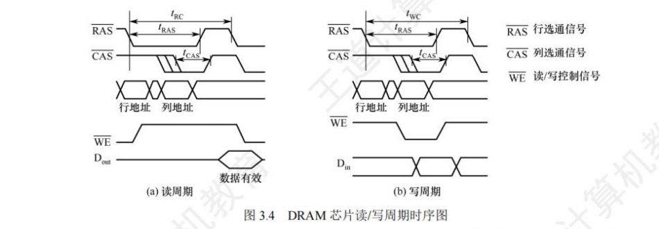
SRAM 和 DRAM 的比较
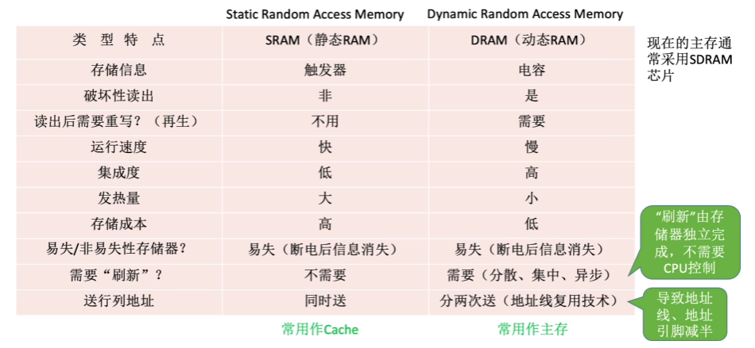
SDRAM
目前更常用的是 SDRAM（同步 DRAM） 芯片，其工作方式与传统 DRAM 的不同，传统 DRAM 与 CPU 采用异步方式交换数据，CPU 发出地址和控制信号后，经过一段延迟时间，数据才读出或写入，在读/写完成之前，CPU 不能做其他工作。而 SDRAM 与 CPU 采用同步方式交换数据，它将 CPU 发出的地址和控制信号锁存起来，CPU 在其读/写完成之前可进行其他操作。
SDRAM 的每一步操作都在系统时钟的控制下进行，支持突发传输方式。第一次存取时给出首地址，同一行的所有数据都被送到行缓冲器，因此，以后每个时钟都可以连续地从 SDRAM 输出一个数据。
行缓冲器通常用 SRAM 实现，用来缓存指定行中整行的数据，其大小为“列数 位平面数”。
只读存储器(ROM)
Read Only Memory
ROM 具有两个显著的优点：
- 结构简单，所以位密度比可读/写存储器的高。
- 具有非易失性，所以可靠性高。
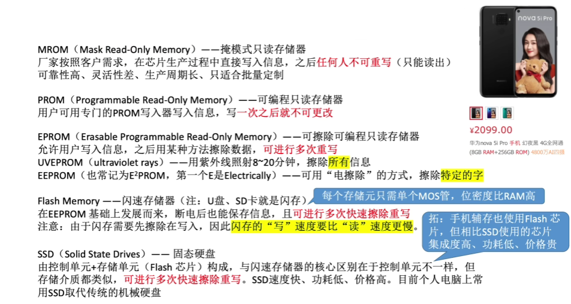
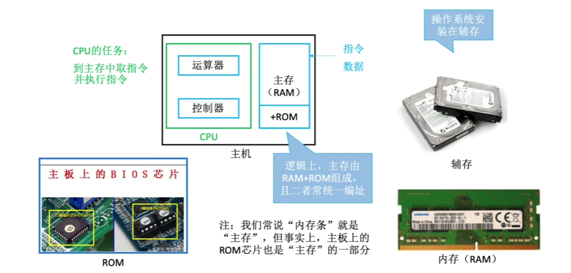
主存储器的基本组成
下图是主存储器(MainMemory，MM)的基本框图，其中由一个个存储 0 或 1 的记忆单元（也称存储元件）构成的存储矩阵（也称存储体）是存储器的核心部件。存储元件是具有两种稳态的能表示二进制 0 和 1 的物理器件。
为了存取存储体中的信息，必须对存储单元编号（也称编址）。编址单位是指具有相同地址的那些存储元件构成的一个单位，可以按字节编址，也可以按字编址。现代计算机通常采用字节编址方式，此时存储体内的一个地址中有 1 字节。
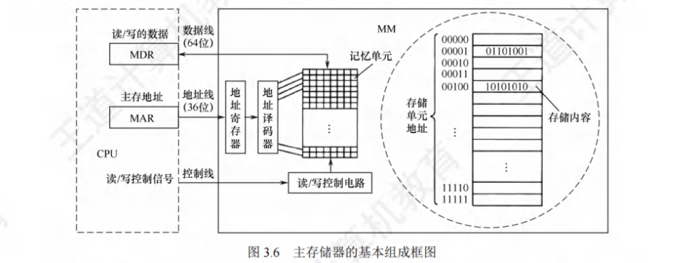
指令执行过程中需要访问主存时，CPU 首先把被访问单元的地址送到 MAR 中，然后通过地址线将主存地址送到主存中的地址寄存器，以便地址译码器进行译码，选中相应单元，同时 CPU 将读/写信号通过控制线送到主存的读/写控制电路。
若是写操作，则 CPU 同时将要写的信息送到 MDR 中，在读/写控制电路的控制下，经数据线将信号写入选中的单元；
若是读操作，则主存读出选中单元的内容送至数据线，然后被送到 MDR 中。
MDR 的位数与数据线的位数相同，MAR 的位数与地址线的位数相同。上图采用 64 位数据线，所以在按字节编址方式下，每次最多可以存取 8 个单元的内容。地址线的位数决定了主存地址空间的最大可寻址范围。
Tip
数据线的位数通常等于存储字长，因此 MDR 的位数通常等于存储字长；若数据线的位数不等于存储字长，则 MDR 的位数由数据线的位数决定。
多模块存储器
多模块存储器是一种空间并行技术，利用多个结构完全相同的存储模块的并行工作来提高存储器的吞吐率。常用的有单体多字存储器和多体低位交叉存储器。
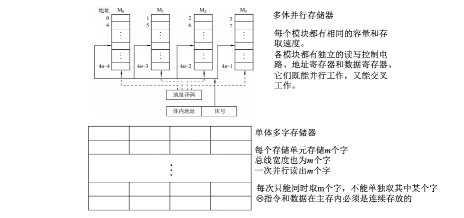
Note
CPU 的速度比存储器快得多，若同时从存储器中取出 n 条指令，就可以充分利用 CPU 资源，提高运行速度。多体交叉存储器就是基于这种思想提出的。
单体多字存储器
在单体多字系统中，每个存储单元存储 m 个字，总线宽度也为 m 个字，一次并行读出 m 个字。
在一个存取周期内，从同一地址取出 m 条指令，然后将指令逐条送至 CPU 执行，即每隔 1/m 存取周期，CPU 向主存取一条指令。这显然提高了单体存储器的工作速度。
缺点：只有指令和数据在主存中连续存放时，这种方法才能有效提升存取速度。一旦遇到转移指令，或操作数不能连续存放时，这种方法的提升效果就不明显。
多体并行存储器
多体并行存储器由多体模块组成。每个模块都有相同的容量和存取速度，各模块都有独立的读/写控制电路、地址寄存器和数据寄存器。它们既能并行工作，又能交叉工作。
多体并行存储器分为**高位交叉编址（顺序方式）和低位交叉编址（交叉方式）**两种。
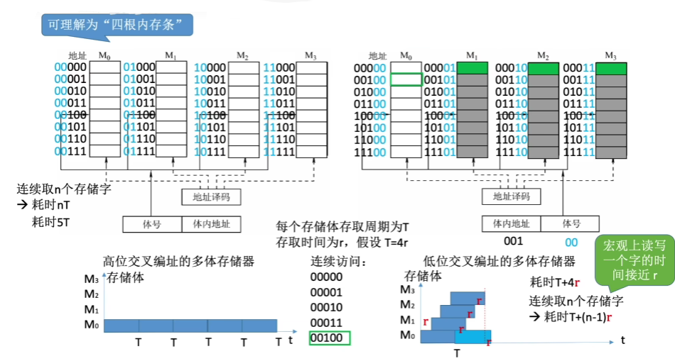
Tip
模块内的地址是连续的，存取方式仍是串行存取，因此高位交叉编址的多体存储器仍是顺序存储器。
交叉存储器可以采用轮流启动或同时启动两种方式。
-
轮流启动
若每个模块一次读/写的位数正好等于数据总线位数，模块的存取周期为 T，总线周期为 r，为实现轮流启动方式，存储器交叉模块数 m 应大于或等于
若当前访存地址所在模块内的上一次存取周期还没有完成，则会发生访存冲突，此时需延迟发生冲突的访问请求。
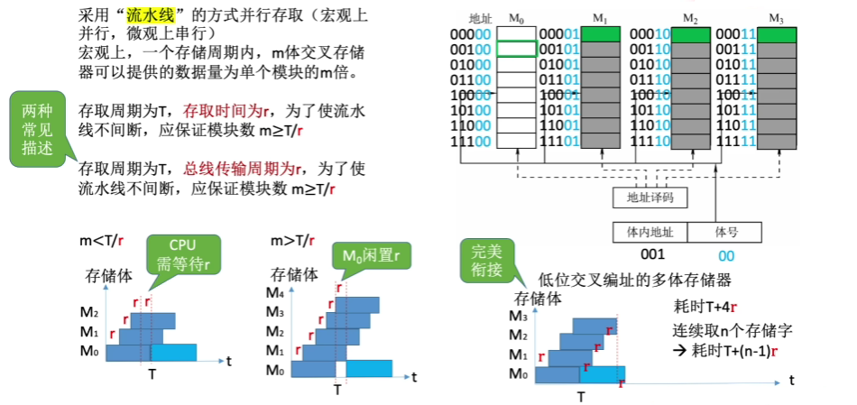
-
同时启动
若所有模块一次并行读/写的总位数正好等于数据总线位数，则可以同时启动所有模块进行读/写。
设每个模块一次读/写的位数为 16 位，模块数 m = 4，数据总线位数为 64 位，4 个模块一共提供 64 位，正好构成一个存储字，因此应该同时启动 4 个模块进行并行读/写。
主存储器与 CPU 的连接
连接原理
- 主存储器通过数据总线、地址总线和控制总线与 CPU 连接。
- 数据总线的位数与工作频率的乘积正比于数据传输速率。
- 地址总线的位数决定了可寻址的最大内存空间。
- 控制总线（读/写）指出总线周期的类型和本次输入/输出操作完成的时刻。
主存容量扩展
位扩展
位扩展是指对字长进行扩展（增加存储字长）。当 CPU 的系统数据线数多于存储芯片的数据位数时，必须对存储芯片扩位，使其数据位数与 CPU 的数据线数相等。
位扩展的连接方式：各芯片的地址线、片选线和读/写控制线与系统总线相应并联；各芯片的数据线单独引出，分别连接系统数据线。各芯片同时工作。
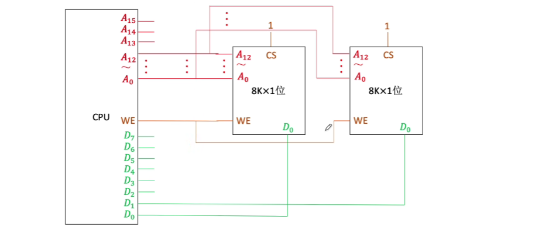
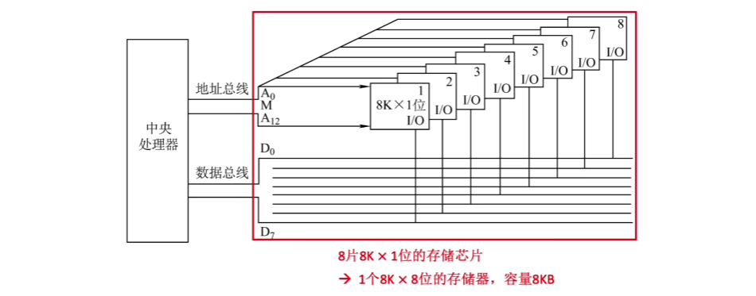
字扩展
字扩展是指对存储字的数量进行扩展，而存储字的位数满足系统要求。系统数据线位数等于芯片数据线位数，系统地址线位数多于芯片地址线位数。
字扩展的连接方式：各芯片的地址线与系统地址线的低位对应相连；芯片的数据线和读/写控制线与系统总线相应并联；由系统地址线的高位译码得到各芯片的片选信号。各芯片分时工作。
CPU 要实现对存储单元的访问，首先要选择存储芯片，即进行片选；然后在选定的芯片中选择具体的存储单元，以进行数据的读/写，即进行字选。芯片内的字选通常是由 CPU 送出的 N 条低位地址线完成（N 由片内存储容量 2^N^决定）。片选信号的产生方法分为线选法和译码片选法。
线选法
线选法用除片内寻址外的高位地址线直接连接至各个存储芯片的片选端，当某位地址线信息为“0”时，就选中与之对应的存储芯片。这些片选地址线每次寻址时只能有一位有效，不允许同时有多位有效，这样才能保证每次只选中一个芯片（或芯片组）。
优点：不需要地址译码器，线路简单。
缺点：地址空间不连续，选片的地址线必须分时为低电平（否则不能工作），不能充分利用系统的存储器空间，造成地址资源的浪费。
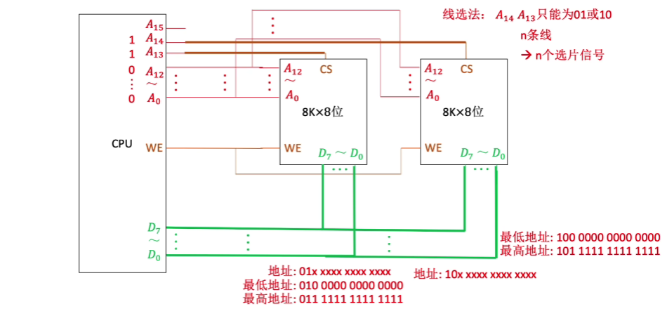
译码片选法
译码片选法用除片内寻址外的高位地址线通过地址译码器产生片选信号。
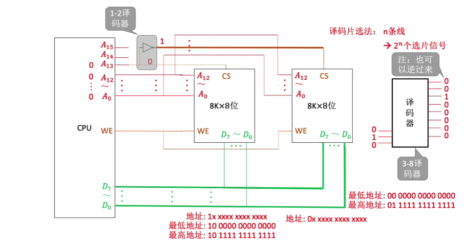
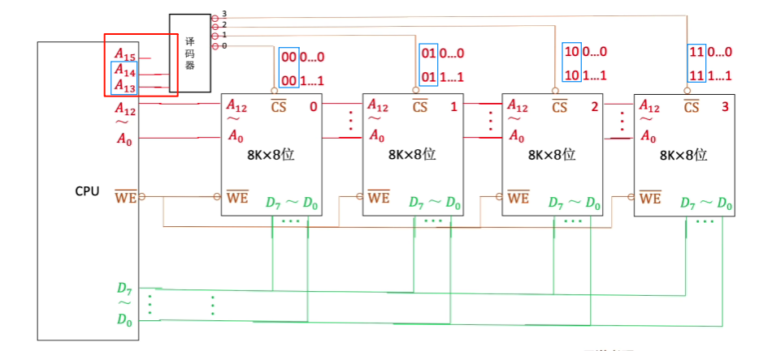
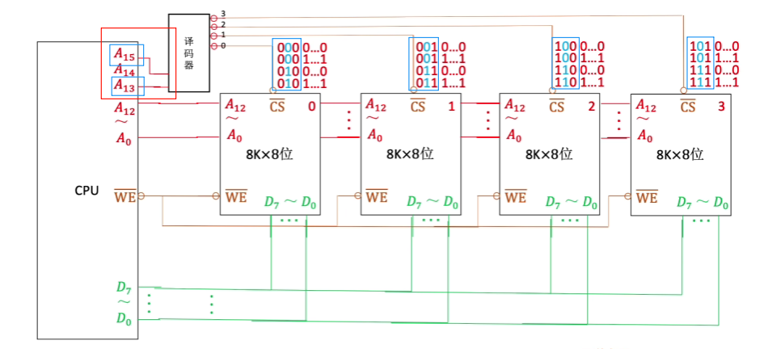
字位同时扩展法
字位同时扩展是前两种扩展的组合，这种方式既增加存储字的数量，又增加存储字长。
字位同时扩展的连接方式：将进行位扩展的芯片作为一组，各组的连接方式与位扩展的相同；由系统地址线高位译码产生若干片选信号，分别接到各组芯片的片选信号。
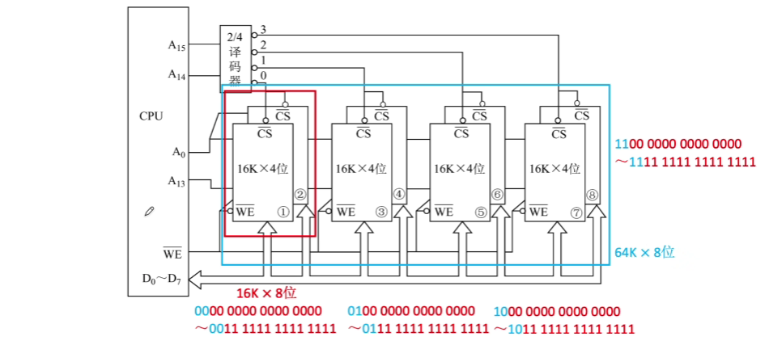
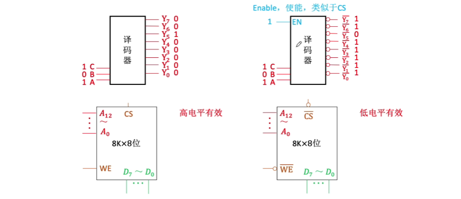
存储器与 CPU 的连接
-
合理选择存储芯片
要组成一个主存系统，选择存储芯片是第一步，主要指存储芯片的类型（RAM 或 ROM）和数量的选择。
通常选用 ROM 存放系统程序、标准子程序和各类常数，RAM 则是为用户编程而设置的。
此外，在考虑芯片数量时，要尽量使连线简单、方便。
-
地址线的连接
存储芯片的容量不同，其地址线数也不同，而 CPU 的地址线数往往比存储芯片的地址线数要多。
通常将
- CPU 地址线的低位与存储芯片的地址线相连，以选择芯片中的某一单元（字选），这部分的译码是由芯片的片内逻辑完成 的。
- CPU 地址线的高位则在扩充存储芯片时使用，用来选择存储芯片（片选），这部分译码由外接译码器逻辑完成。
-
数据线的连接
CPU 的数据线数与存储芯片的数据线数不一定相等，在相等时可直接相连；在不等时必须对存储芯片扩位，使其数据位数与 CPU 的数据线数相等。
-
读/写命令线的连接
CPU 读/写命令线一般可直接与存储芯片的读/写控制端相连，通常高电平为读，低电平为写。
有些 CPU 的读/写命令线是分开的（读为 ，写为 ，均为低电平有效)，此时 CPU 的读命令线应与芯片的允许读控制端相连，而 CPU 的写命令线则应与芯片的允许写控制端相连。
-
片选线的连接
片选线的连接是 CPU 与存储芯片连接的关键。
存储器由许多存储芯片叠加而成，哪一片被选中完全取决于该存储芯片的片选控制端 是否能接收到来自 CPU 的片选有效信号。
片选有效信号与 CPU 的访存控制信号 （低电平有效）有关，因为只有当 CPU 要求访存时，才要求选中存储芯片。若 CPU 访问 IO，则 为高，表示不要求存储器工作。
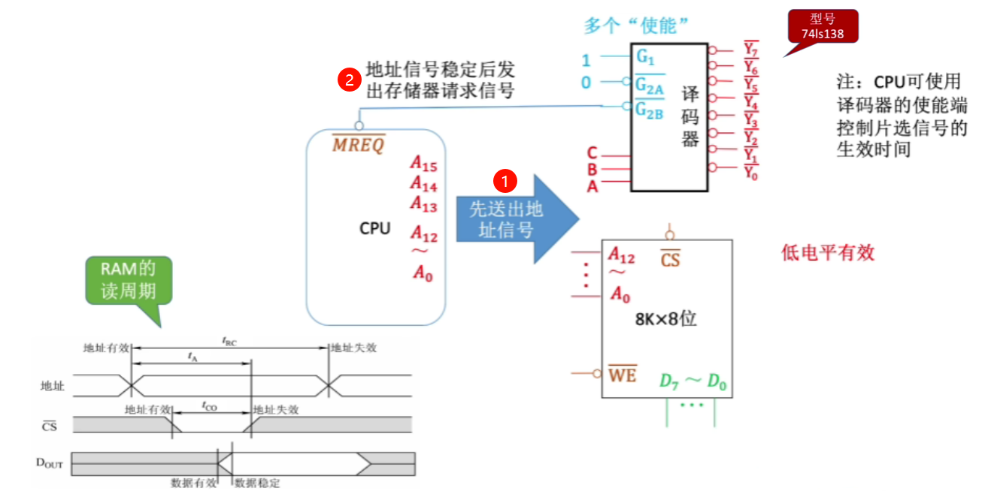
外部存储器
此部分内容在 输入输出管理 中详细介绍
磁盘存储器
磁盘存储器是以磁盘为存储介质的存储器。
磁记录原理：磁头和磁性记录介质相对运动时，通过电磁转换完成读/写操作。
磁记录方式：通常采用调频制(FM)和改进型调频制(MFM)的记录方式。
编码方法：按某种方案（规律），把一连串的二进制信息变换成存储介质磁层中一个磁化翻转状态的序列，并使读/写控制电路容易、可靠地实现转换。
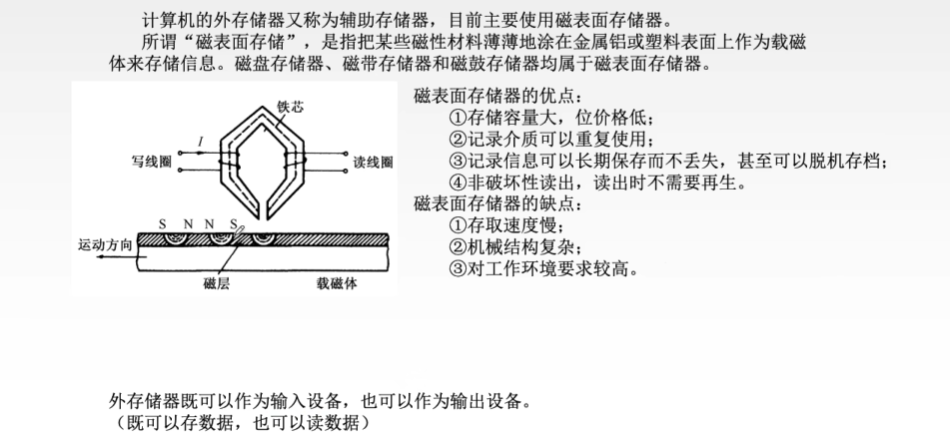
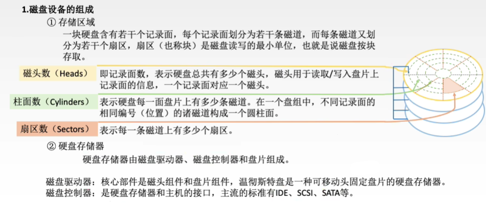
- 磁盘驱动器：驱动磁盘转动并在盘面上通过磁头进行读/写操作的装置（不属于 I/O 接口）。
- 磁盘控制器：磁盘驱动器与主机的接口，负责接收并解释 CPU 发来的命令，向磁盘驱动器发出各种控制信号，并负责检测磁盘驱动器的状态。
磁道号（柱面号）；磁头号（盘面号）
Note
磁盘高速缓存(DiskCache)：在内存中开辟一部分区域，用于缓冲将被送到磁盘上的数据。因为 CPU 中没有那么多通用寄存器用于存放交换的数据，且磁盘与通用寄存器的速度相差过大，因此磁盘存储器通常直接和主存交换信息。
优点：写磁盘时是按“簇”进行的，可以避免频繁地用小块数据写盘；有些中间结果数据在写回磁盘之前可被快速地再次使用。
磁盘存储器以成批（组）方式进行数据读/写。
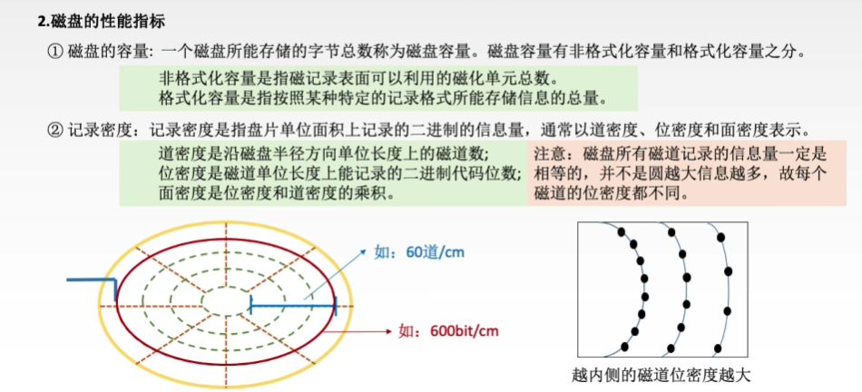
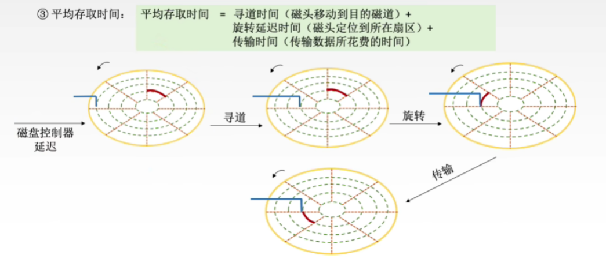
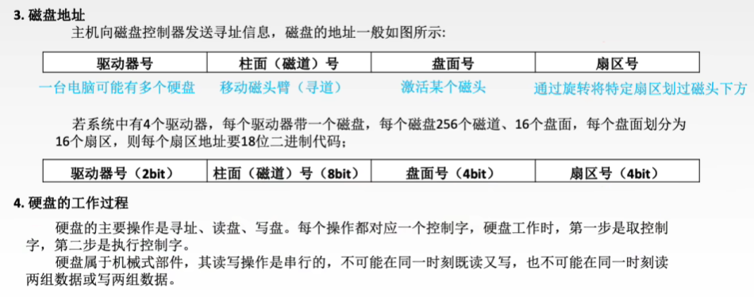
磁盘格式化
磁盘存储数据之前需要进行格式化。
在磁盘的格式化过程中，要对磁盘划分扇区，每个扇区要写入一些控制信息，扇区尾部还要留有一定的空隙，这些均需占用一些存储空间，因此导致格式化后的实际容量比非格式化的容量要小。
磁盘阵列(RAID)
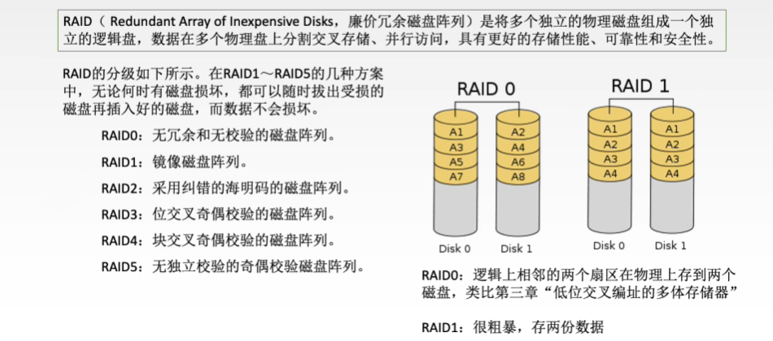
RAID0 把连续多个数据块交替地存放在不同物理磁盘的扇区中，几个磁盘交叉并行读/写，即条带化技术，这样不仅扩大了存储容量，还提高了磁盘存取速度，但 RAID0 没有容错能力。
为了提高可靠性，RAID1 使两个磁盘同时进行读/写，互为备份，若一个磁盘出现故障，可从另一磁盘中读出数据。两个磁盘当一个磁盘使用，意味着容量减少一半。
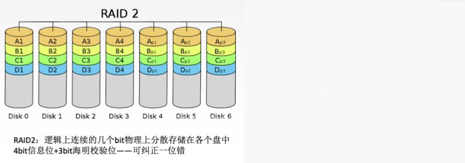
RAID 将多个物理盘组成像单个逻辑盘，不会影响磁记录密度，也不可能提高磁盘利用率。
固态硬盘
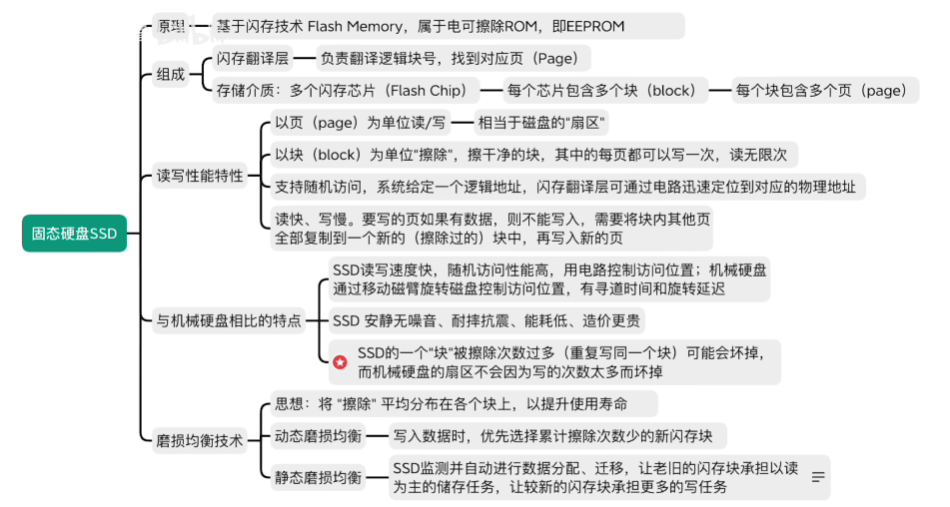
固态硬盘（SSD）是一种基于闪存技术的存储器。它与 U 盘并无本质差别，只是容量更大，存取性能更好。
一个 SSD 由一个或多个闪存芯片和闪存翻译层组成。
闪存芯片替代传统旋转磁盘中的机械驱动器，而闪存翻译层将来自 CPU 的逻辑块读/写请求翻译成对底层物理设备的读/写控制信号，因此，这个闪存翻译层相当于代替了磁盘控制器的角色。
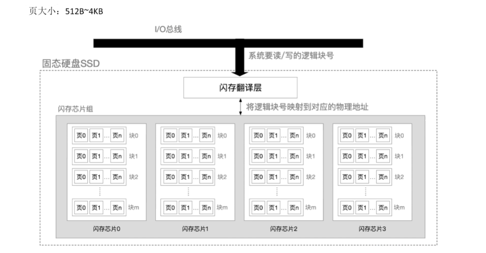
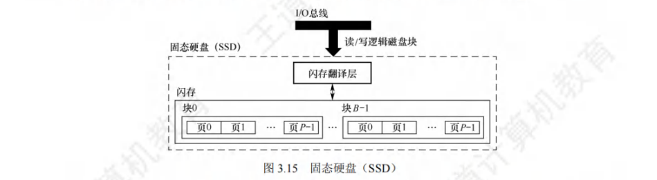
在上图中，一个闪存由 B 块组成，每块由 P 页组成。通常，页的大小是 512B ～ 4KB，每块由 32 ～ 128 页组成，块的大小为 16KB ～ 512KB。
数据的读/写是以页为单位，而擦除则以块为单位。只有在一页所属的块整个被擦除后，才能写这一页。不过，一旦一个块被擦除，块中的每个页就都可以直接再写一次。某个块进行了若干次重复写之后，就会磨损坏，不能再使用。
随机写很慢有两个原因：
- 擦除块较慢，通常比访问页高一个数量级。
- 若写操作试图修改一个包含已有数据的页 P，则这个块中所有含有用数据的页都必须被复制到一个新（擦除过的）块中，然后才能进行对页 P 的写操作。
比起传统磁盘，SSD 有很多优点，它由半导体存储器构成，没有移动的部件，因而随机访问时间比机械磁盘要快很多，也没有任何机械噪声和振动，能耗更低，抗震性好，安全性高等。
固态硬盘也有缺点，闪存的擦写寿命是有限的。若直接用普通闪存组装 SSD，读/写数据时会集中在 SSD 的一部分闪存，这部分闪存的寿命会损耗得特别快。一旦这部分闪存损坏，整块 SSD 也就损坏了。
SSD 磨损均衡技术大致分为两种：
- 动态磨损均衡：写入数据时，自动选择较新的闪存块。
- 静态磨损均衡：这种技术更为先进，就算没有数据写入，SSD 也会监测并自动进行数据分配，让老的闪存块承担无须写数据的存储任务，同时让较新的闪存块腾出空间，平常的读/写操作在较新的闪存块中进行。
高速缓冲存储器
高速缓存 Cache 拥有比主存更快的速度，因此在 CPU 和主存之间设置 Cache 可以显著提高存储系统的效率。Cache 由 SRAM 组成，通常直接集成在 CPU 中。
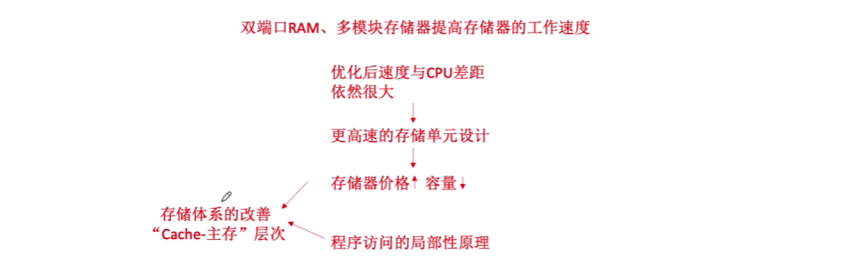
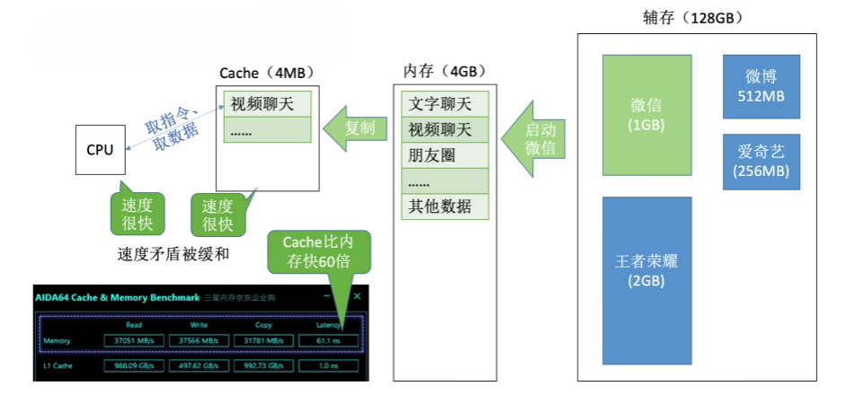
程序访问的局部性原理
程序访问的局部性原理包括时间局部性和空间局部性。
- 时间局部性：指最近的未来要用到的信息，很可能是现在正在使用的信息，因为程序中存在循环和需要多次重复执行的子程序段，以及对数组的存储和访问操作。
- 空间局部性：指最近的未来要用到的信息，很可能与现在正在使用的信息在存储空间上是邻近的，因为指令通常是顺序存放、顺序执行的，数据一般也是以向量、数组等形式簇聚地存储的。
高速缓冲技术就是利用局部性原理，把程序中正在使用的部分数据存放在一个高速的、容量较小的 Cache 中，使 CPU 的访存操作大多数针对 Cache 进行，从而提高程序的执行速度。
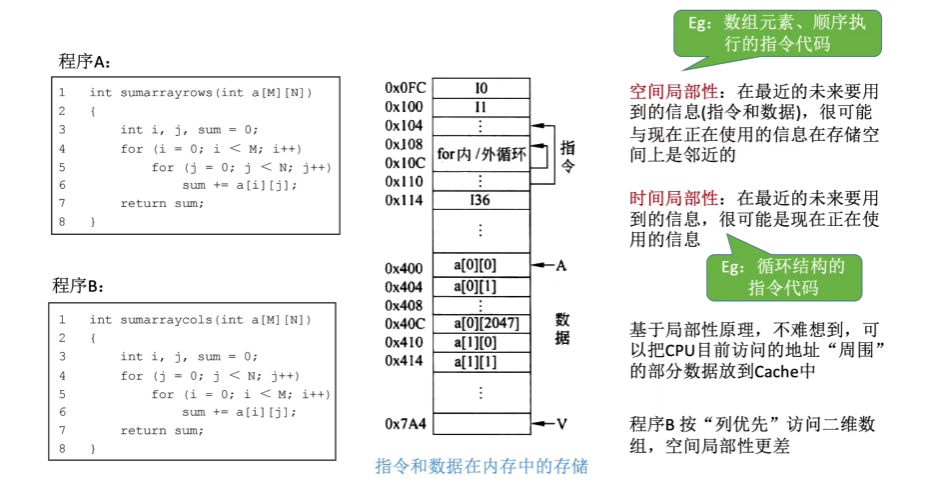
工作原理
为便于 Cache 与主存交换信息，Cache 和主存都被划分为大小相等的块，Cache 块也称 Cache 行，每块由若干字节组成，块的长度称为块长（也称行长）。
因为 Cache 的容量远小于主存的容量，所以 Cache 中的块数要远少于主存中的块数，Cache 中仅保存主存中最活跃的若干块的副本。因此，可按照某种策略预测 CPU 在未来一段时间内欲访存的数据，将其装入 Cache。
Tip
- 主存块太小，不能很好地利用空间局部性，从而导致 缺失率变高；
- 主存块太大 会使得 Cache 行数变少，即 Cache 中可以存放主存块的位置变少，从而也会 降低命中率。
因此，主存块大小应该适中，既不能太大，又不能太小，通常为几十字节到上百字节。
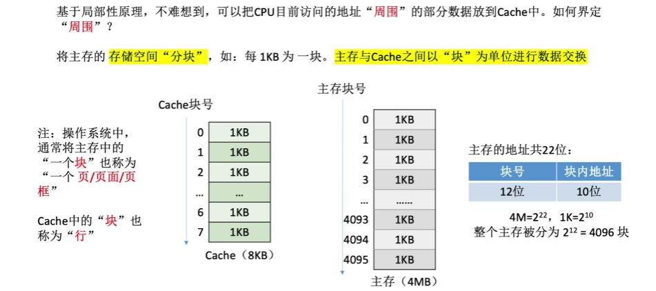
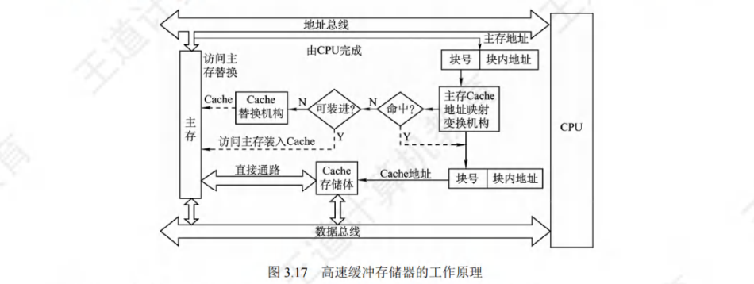
当 CPU 发出读请求时，要到 Cache 中查看该主存地址是否在 Cache 中
- 若访存地址在 Cache 中命中，就将此地址转换成 Cache 地址，直接对 Cache 进行读操作，与主存无关；
- 若访存地址在 Cache 不命中，则仍需访问主存，并把此字所在的块一次性地从主存调入 Cache。若此时 Cache 已满，则需根据某种替换算法，用这个块替换 Cache 中原来的某块信息。整个过程全部由硬件实现。
Tip
CPU 与 Cache 之间的数据交换以字为单位，而 Cache 与主存之间的数据交换则以 Cache 块为单位。
当 CPU 发出写请求时，若 Cache 命中，有可能会遇到 Cache 与主存中的内容不一致的问题。因此若 Cache 命中，需要按照一定的写策略处理。
Cache 命中率
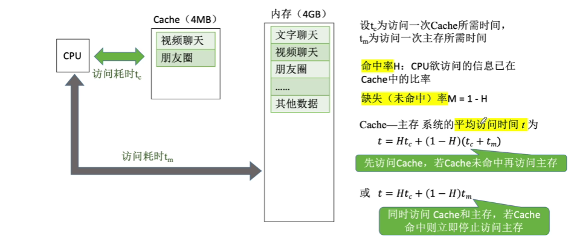
Cache 行的长度较大时，能充分利用程序访问的空间局部性，使一个较大的局部空间被一起调到 Cache 中，因而可以增加命中机会。但是，行长也不能太大，因为若未命中，则需花更多时间从主存读块。而且行长太大，Cache 项数变少，因而命中的可能性变小。
Cache 行的长度较小时，命中率会很低，但好处是存取块的代价较小。
Cache 和主存的映射方式
由于 Cache 行数比主存块数少得多，因此主存中只有一部分块的信息可放在 Cache 中，因此在 Cache 中要为每块加一个标记位，指明它是主存中哪一块的副本。该标记的内容相当于主存中块的编号。为了说明 Cache 行中的信息是否有效，每个 Cache 行需要一个有效位。
Cache 行中的信息是主存中某个块的副本，地址映射是指把主存地址空间映射到 Cache 地址空间，即把存放在主存中的信息按照某种规则装入 Cache。
Cache 地址空间和主存地址空间相互独立，通过地址映射把主存地址空间映射到 Cache 地址空间。
三种映射方式中，
- 直接映射的每个主存块只能映射到 Cache 中的某一固定行；
- 全相联映射可以映射到所有 Cache 行；
- N 路组相联映射可以映射到 N 行；
当 Cache 大小、主存块大小一定时，
- 直接映射的命中率最低，全相联映射的命中率最高。
- 直接映射的判断开销最小、所需时间最短，全相联映射的判断开销最大、所需时间最长。
- 直接映射标记所占的额外空间开销最少，全相联映射标记所占的额外空间开销最大。
全相联映射
主存中的每一块可以装入 Cache 中的任何位置，每行的标记用于指出该行来自主存的哪一块，因此 CPU 访存时需要与所有 Cache 行的标记进行比较。
优点：Cache 块的冲突概率低，只要有空闲 Cache 行，就不会发生冲突；空间利用率高；命中率高；
缺点：标记的比较速度较慢；实现成本较高，通常需采用按内容寻址的相联存储器。
通常为每个 Cache 行都设置一个比较器，比较器位数等于标记字段的位数。
访存时根据标记字段的内容来访问 Cache 行中的主存块，因而 其查找过程是一种“按内容访问”的存取方式，所以是一种“相联存储器”。这种方式的时间开销和硬件开销都较大，不适合大容量 Cache。
Tip
[主存-外存]通常采用的是全相联映射，因为访问外存的代价很大，提高命中率才是关键。
直接映射
主存中的每一块只能装入 Cache 中的唯一位置。若这个位置已有内容，则产生块冲突，原来的块将无条件地被替换出去（无须使用替换算法）。
直接映射实现简单，但不够灵活，即使 Cache 的其他许多地址空着也不能占用，这使得直接映射的块冲突概率最高，空间利用率最低。
组相联映射
将 Cache 分成 个大小相等的组，每个主存块可以装入固定组中的任意一行，即组间采用直接映射、而组内采用全相联映射的方式。
它是对直接映射和全相联映射的一种折中，当 时变为全相联映射，当 行数时变为直接映射。
路数越大，即每组 Cache 行的数量越大，发生块冲突的概率越低，但相联比较电路也越复杂。选定适当的数量，可使组相联映射的成本接近直接映射，而性能上仍接近全相联映射。
若每组有 r 个 Cache 行，则称为 r 路组相联。
直接映射因为每块只能映射到唯一的 Cache 行，因此只需设置 1 个比较器。而 r 路组相联映射需要在对应分组中与 r 个 Cache 行进行比较，因此需设置 r 个比较器。
Cache 容量计算
每个 Cache 行对应一个标记项（包括有效位、脏位、替换算法位、标记位）。
Tip
- 使用组相联映射时替换位为
- 使用全相联映射时替换位为
Note
在组相联中，将每组各行的标记项排成一行，将各组从上到下排列，构成一个二维的标记阵列。查找 Cache 时就是查找标记阵列的标记项是否符合要求。
Tip
- 如果题目说明不考虑一致性维护，意思是不考虑脏位。
- 如果题目说明考虑一致性维护但使用的是直写法，意思考虑脏位但脏位的大小是 0bit，等同于不考虑脏位。
- 如果题目说明使用的是直接映射方式，意思是不考虑替换算法位，因为直接映射方式无须使用替换算法。
- 如何题目说明在替换 Cache 块时使用随机替换算法，意思是不考虑替换算法位，因为随机替换不需要替换算法位。
Cache 替换算法
在采用全相联映射或组相联映射方式时，从主存向 Cache 传送一个新块，当 Cache 或 Cache 组中的空间已被占满时，就需要使用替换算法置换 Cache 行。
而采用直接映射时，一个给定的主存块只能放到唯一的固定 Cache 行中，所以在对应 Cache 行已有一个主存块的情况下，新的主存块毫无选择地把原先已有的那个主存块替换掉，因而无须考虑替换算法。
随机算法(RAND)
先进先出算法(FIFO)
近期最少使用算法(LRU)
最不经常使用算法(LFU)
Cache 的一致性问题
因为 Cache 中的内容是主存块副本，当对 Cache 中的内容进行更新时，就需选用写操作策略使 Cache 内容和主存内容保持一致。此时分两种情况。
写命中
对于 Cache 写操作命中，有两种处理方法：
-
回写法(write-back)
当 CPU 对 Cache 写命中时，只把数据写入 Cache，而不立即写入主存，只有当此块被替换出时才写回主存。这种方法减少了访存次数，但存在数据不一致的隐患。
为了减少写回主存的次数，给每个 Cache 行设置一个修改位（脏位）。
- 若修改位为 1，则说明对应 Cache 行中的块被修改过，替换时须写回主存。
- 若修改位为 0，则说明对应 Cache 行中的块未被修改过，替换时无须写回主存。
-
全写法（直写法、write-through）
当 CPU 对 Cache 写命中时，必须把数据同时写入 Cache 和主存。当某一块需要替换时，就不必把这一块写回主存了，用新调入的块直接覆盖即可。
- 优点：这种方法实现简单，能随时保持主存数据的正确性。
- 缺点：增加了访存次数，降低了 Cache 的效率。
写缓冲：为减少全写法直接写入主存的时间损耗，在 Cache 和主存之间加一个写缓冲。CPU 同时写数据到 Cache 和写缓冲中，写缓冲再将内容写入主存。写缓冲是一个 FIFO 队列，写缓冲可以解决速度不匹配的问题。但若出现频繁写时，会使写缓冲饱和溢出。
写不命中
对于 Cache 写操作不命中，有两种处理方法：
-
写分配法(write-allocate)
更新主存单元，然后把这个主存块调入 Cache。它试图利用程序的空间局部性，缺点是每次写不命中都要从主存读一个块到 Cache 中。
-
非写分配法(not-write-allocate)
只更新主存单元，而不把主存块调入 Cache。
非写分配法通常与全写法合用，写分配法通常和回写法合用。
多级 Cache
随着指令流水技术的发展，需要将指令 Cache 和数据 Cache 分开设计，这就有了分离的 Cache 结构。
统一 Cache 的优点是设计和实现相对简单，但由于执行部件存取数据时，指令预取部件要从同一 Cache 读指令，因此会引发冲突。采用分离的 Cache 结构可以解决这个问题，而且分离的指令和数据 Cache 还可以充分利用指令和数据的不同局部性来优化性能。
现代计算机的 Cache 通常设立多级 Cache，假定设 2 级 Cache，按离 CPU 的远近可各自命名为 L1Cache、L2Cache，离 CPU 越远，访问速度越慢，容量越大。

虚拟存储器
主存和辅存共同构成了虚拟存储器，二者在硬件和系统软件的共同管理下工作。
对于应用程序员而言，虚拟存储器是透明的。虚拟存储器具有主存的速度和辅存的容量。
结合 内存分配与回收 阅读
概念
虚拟存储器将主存或辅存的地址空间统一编址，形成一个庞大的地址空间，在这个空间内，用户可以自由编程，而不必在乎实际的主存容量和程序在主存中实际的存放位置。
用户编程允许涉及的地址称为虚地址或逻辑地址，虚地址对应的存储空间称为虚拟空间或程序空间。由于虚拟存储器的实际容量小于或等于主存和辅存的容量之和，因此逻辑地址的位数比物理地址的位数多。
实际的主存单元地址称为实地址或物理地址，实地址对应的是主存地址空间，也称实地址空间。
Tip
虚拟存储系统利用的是局部性原理，程序应当具有较好的局部。
虚地址比实地址要大很多。
CPU 使用虚地址时，先判断这个虚地址对应的内容是否已装入主存。
- 若已在主存中，则通过地址变换，CPU 可直接访问主存指示的实际单元；
- 若不在主存中，则把包含这个字的一页或一段调入主存后再由 CPU 访问。若主存已满，则采用替换算法置换主存中的交换块（页面）。
虚拟存储器只能采用回写法：虚拟存储器也采用和 Cache 类似的技术，将辅存中经常访问的数据副本存放到主存中。但是缺页（或段）而访问辅存的代价很大，提高命中率是关键，因此虚拟存储机制采用全相联映射，每个虚页面可以存放到对应主存区域的任何一个空闲页位置。
此外，当进行写操作时，不能每次写操作都同时写回磁盘，因而在处理一致性问题时，采用回写法。
页式虚拟存储器
优点：页面的长度固定，页表简单，调入方便。
缺点：因为程序不可能正好是页面的整数倍，最后一页的零头将无法利用而造成浪费，并且页不是逻辑上独立的实体，所以处理、保护和共享都不及段式虚拟存储器方便。
页表
系统中每个进程有一个页表，页表中每个表项与一个虚页对应。
- 有效位：也称装入位，用来表示对应页面是否在主存。
- 若为 1，则表示该虚拟页已从外存调入主存，此时页表项存放该页的物理页号。
- 若为 0，则表示没有调入主存，此时页表项可以存放该页的磁盘地址。
- 脏位：也称修改位，用来表示页面是否被修改过，虚存机制中采用回写策略，利用脏位可判断替换时是否需要写回磁盘。
- 引用位：也称使用位，用来配合替换策略 进行设置。
缺页处理
缺页是 CPU 在执行指令过程中进行取指令或读/写数据时发生的一种故障，属于内部异常。
若页表项中的有效位为 0，则发生“缺页”异常，需要调用操作系统的缺页异常处理程序。
缺页处理程序根据对应表项中的存放位置字段，将所缺页面从磁盘调入一个空闲的物理页框。若主存中没有空闲页框，还需要选择一个页面替换。在替换时还需要根据脏位确定是否要写回磁盘。缺页处理过程中需要对页表进行相应的更新。
缺页处理完后要重新执行引起缺页发生的指令。
地址转换
在虚拟存储系统中，指令给出的地址是虚拟地址，因此当 CPU 执行指令时，要先将虚拟地址转换为主存物理地址，才能到主存中存取指令和数据。这个地址转换由操作系统来完成，但需要一部分硬件基础的支持，如快表、地址映射系统等。
虚拟地址分为两个字段：高位为虚页号，低位为页内偏移地址。
物理地址也分为两个字段：高位为物理页号，低位为页内偏移地址。
由于两者的页面大小相同，因此页内偏移地址是相等的。虚拟地址到物理地址的转换是由页表实现的，页表是一张存放在主存中的虚页号和实页号的对照表。
每个进程都有一个页表基址寄存器，存放该进程的页表首地址，据此找到对应的页表首地址，然后根据虚拟地址高位的虚拟页号找到对应的页表项，
-
若装入位为 1，则取出物理页号，和虚拟地址低位的页内地址拼接，形成实际物理地址。
-
若装入位为 0，说明缺页，需要操作系统进行缺页处理。
快表(TLB)
依据程序访问的局部性原理，在一段时间内总是经常访问某些页时，若把这些页对应的页表项存放在高速缓冲器组成的快表(TLB) 中，则可以明显提高效率。
相应地把放在主存中的页表称为慢表(Page)。在地址转换时，首先查找快表，若命中，则无须访问主存中的页表。
Tip
快表采用高速相联存储器，它的速度快来源于硬件本身，而不是依赖搜索算法来查找的；
慢表存储在内存中，通常是依赖于查找算法。
快表与慢表的命中率没有必然联系，快表仅是慢表的一个部分拷贝，不能够得到比慢表更多的结果。
快表用 SRAM 实现，其工作原理类似于 Cache，通常采用全相联或组相联映射方式。TLB 表项由页表表项内容和 TLB 标记组成。
- 全相联映射下，TLB 标记就是对应页表项的虚拟页号；
- 组相联方式下，TLB 标记则是对应虚拟页号的高位部分，而虚拟页号的低位部分作为 TLB 组的组号。
具有 TLB 和 Cache 的多级存储系统
下图是一个具有 TLB 和 Cache 的多级存储系统，其中 Cache 采用二路组相联方式。
CPU 给出一个 32 位的虚拟地址，TLB 采用全相联方式，每一项都有一个比较器，查找时将虚页号与每个 TLB 标记字段同时进行比较，
- 若有某一项相等且对应有效位为 1，则 TLB 命中，此时可直接通过 TLB 进行地址转换；
- 若未命中，则 TLB 缺失，需要访问主存去查页表。
下图中所示的是两级页表方式，虚页号被分成页目录索引和页表索引两部分，由这两部分得到对应的页表项，从而进行地址转换，并将相应表项调入 TLB，若 TLB 已满，则还需要采用替换策略。
完成由虚拟地址到物理地址的转换后，Cache 机构根据映射方式将物理地址划分成多个字段，然后根据映射规则找到对应的 Cache 行或组，将对应 Cache 行中的标记与物理地址中的高位部分进行比较，若相等且对应有效位为 1，则 Cache 命中，此时根据块内地址取出对应的字送给 CPU。
在一个具有 TLB 和 Cache 的多级存储系统中，CPU 一次访存操作可能涉及 TLB、页表、Cache、主存和磁盘的访问，访问过程如下图所示。
CPU 访存过程中存在三种缺失情况：
- TLB 缺失：要访问的页面的页表项不在 TLB 中；
- Cache 缺失：要访问的主存块不在 Cache 中；
- Page 缺失：要访问的页面不在主存中。
由于 TLB 只是页表的一部分副本，因此 Page 缺失时，TLB 也必然缺失。同理，Cache 也只是主存的一部分副本，页表未命中意味着信息不在主存，因此 Page 缺失时，Cache 也必然缺失。
- 第 1 种组合无须访问主存；
- 第 2 种和第 3 种组合都需要访问一次主存；
- 第 4 种组合需要访问两次主存；
- 第 5 种组合发生“缺页异常”，需要访问磁盘，并且至少访问两次主存。
Tip
- Cache 缺失处理由硬件完成；
- 缺页处理由软件完成，操作系统通过“缺页异常处理程序”来实现；
- TLB 缺失既可以用硬件，又可以用软件来处理。
段式虚拟存储器
段式虚拟存储器中的段是按程序的逻辑结构划分的，各个段的长度因程序而异。
把虚拟地址分为两部分：段号和段内地址。
虚拟地址到实地址之间的变换是由段表来实现的。段表是程序的逻辑段和在主存中存放位置的对照表。段表的每行记录与某个段对应的段号、装入位、段起点和段长等信息。因为段的长度可变，所以段表中要给出各段的起始地址与段的长度。
CPU 根据虚拟地址访存时，首先根据段表基地址与段号拼接成对应的段表项，然后根据该段表项的装入位判断该段是否已调入主存（装入位为“1”，表示该段已调入主存；装入位为“0”，表示该段不在主存中）。已调入主存时，从段表读出该段在主存中的起始地址，与段内地址（偏移量）相加，得到对应的主存实地址。
因为段本身是程序的逻辑结构所决定的一些独立部分，因而分段对程序员来说是不透明的，而分页对程序员来说是透明的，程序员编写程序时不需知道程序将如何分页。
段式虚拟存储器的
- 优点：段的分界与程序的自然分界相对应，因而具有逻辑独立性，使得它易于编译、管理、修改和保护，也便于多道程序的共享；
- 缺点：因为段长度可变，分配空间不便，容易在段间留下碎片，不好利用，造成浪费。
段页式虚拟存储器
在段页式虚拟存储器中，把程序按逻辑结构分段，每段再划分为固定大小的页，主存空间也划分为大小相等的页，程序对主存的 调入、调出仍以页为基本交换单位。
每个程序对应一个段表，每段对应一个页表，段的长度必须是页长的整数倍，段的起点必须是某一页的起点。
虚地址分为段号、段内页号、页内地址三部分。
CPU 根据虚地址访存时，
- 首先根据段号得到段表地址；
- 然后从段表中取出该段的页表起始地址，与虚地址段内页号合成，得到页表地址；
- 最后从页表中取出实页号，与页内地址拼接形成主存实地址。
段页式虚拟存储器的
- 优点：兼具页式和段式虚拟存储器的优点，可以按段实现共享和保护。
- 缺点：在地址变换过程中需要两次查表，系统开销较大。
虚拟存储器与 Cache 的比较
- 相同之处
- 最终目标都是为了提高系统性能，两者都有容量、速度、价格的梯度。
- 都把数据划分为小信息块，并作为基本的交换单位，虚存系统的信息块更大。
- 都有地址映射、替换算法、更新策略等问题。
- 都依据局部性原理应用“快速缓存”的思想，将活跃的数据放在相对高速的部件中。
- 不同之处
- Cache 解决系统速度，而虚拟存储器解决主存容量。
- Cache 全由硬件实现，是硬件存储器，对所有程序员透明；而虚拟存储器由 OS 和硬件共同实现，是逻辑上的存储器，对系统程序员不透明，但对应用程序员透明。
- 对于不命中性能影响，因为 CPU 的速度约为 Cache 的 10 倍，主存的速度为硬盘的 100 倍以上，因此虚拟存储器系统不命中时对系统性能影响更大。
- CPU 与 Cache 和主存都建立了直接访问的通路，而辅存与 CPU 没有直接通路。也就是说在 Cache 不命中时主存能和 CPU 直接通信，同时将数据调入 Cache；而虚拟存储器系统不命中时，只能先由硬盘调入主存，而不能直接和 CPU 通信。